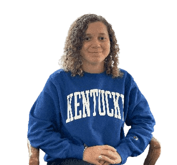

"Well, the reason I ended up at Princeton is because it was less expensive than MIT (haha). When I was a sophomore, I was friends with Elizabeth and Mary and we were deciding which eating club to join. We were between Colo and Quad…we were eating at Colo when we decided to sign into Quad (haha) because we were looking for a place where we could meet new people and make friends. As a junior, I took a gap semester in the fall and came back to a bunch of new people as part of my friend group, but they turned out to be pretty cool. It was strange at first missing so much, but I have the habit of bouncing around places so I am kinda used to it. I went to 4 different high schools and have lived in North Carolina, New Hampshire, Tennessee, and California…That’s why I am so latched to the idea of NYC as a concept. I want to stay somewhere for a long time, somewhere where I am connected to the people and the place. I hated NYC before I came here because I had a fear of rats, but after working there for a summer, I realized that it is so fun! So many things to do, I can walk everywhere, and so many young people."
 Jupiter Ding | Astrophysics 2024 | Collegetown, PA
Jupiter Ding | Astrophysics 2024 | Collegetown, PA
“I’m an astrophysics major and next year I will be starting my PhD in astronomy at Northwestern. I have always liked STEM and research is pretty cool, which is how I’ve ended up here. My career goal is to become a professor in astronomy so I can teach science and give that access to others. Notably, I am aware that the PhD to professor conversion rate is not great (nervous laughter) so I am open to careers in Data Science as well. My dad is also a professor so he influenced me to follow this path…he jokes that having tenure means you can do whatever you want. I don’t know how true it is but I guess I would like to find out haha. When I'm a professor...no grade deflation. Unlike some people I know...”
Elizabeth Ruggiero | CS 2024 | Syosset, NY“Princeton has a good balance of liberal arts classes and engineering/science/math classes, so I feel like I can get a good mix, which is why I wanted to come to Princeton in the first place. My future plan is to do software engineering for 10 years, then maybe after I want to start my own business. I’m not sure what it would be, maybe a bookstore, coffee shop, bakery, or restaurant... I think it would be fun. I feel like I would get bored after doing SWE for so many years. I think it would be nice to have the opportunity to grow my own thing, something I have created... I really like creating things in general, whether that be through crocheting, drawing, or painting. It feels nice to make stuff and when I start to work, I want to make sure I don’t lose that creative expression. I’m gonna make a big effort to keep my hobbies and make weird shit. I need to set aside time to fulfill my creative juices…”

 Dion Sun | Economics 2024 | Jackson, NJ
Dion Sun | Economics 2024 | Jackson, NJ
"I was deciding between going to MIT and Princeton. I decided on Princeton because MIT was too far from home and my older brother Ceon was at Princeton. I also joined Quad since Ceon was in it. I guess I look up to Ceon. I think he is smart, responsible, and cool [I made him say good things about Ceon]. We were very close growing up and basically did everything together. We had the same friend group throughout high school too. Because of him I decided to get involved in Quad and met my main group of friends."
 Destiny Turner | Molecular Biology 2024 | Clearwater, FL“I got into Princeton through Questbridge. I applied because it was well-known and I just wanted to apply to some places not in Florida. With Questbridge, if you get in you have to go, but I am really glad that I am here. I think about the butterfly effect and how if I hadn’t checked my email one day and decided to do Questbridge none of this would have happened and I would never have met any of you… You know as sophomores we were coming off of the COVID year and I only had a few friends outside of my roommates. I was pretty shy but I joined Quad. At the welcome dinner, I had a lot of fun and it felt like a welcoming community. I wanted to get more involved so I became a sophomore officer, which made it easier to make friends because of the officer commitments. I think it is a really good space and community for me…I am also an RCA and I like it a lot. I enjoy the mentorship aspect and being involved in helping students. I am studying molecular biology right now but haven’t decided what I’ll be doing after undergrad. I am not sure if I would want to do research, med school, or something else entirely.”
“I chose Princeton because I liked the ORFE major. ORFE combines a lot of my interests, like I like math but don’t feel like getting my degree in just math… When I was a sophomore, my roommates were trying to bicker clubs but I didn’t really want to do that. One of my upperclassmen friends was in Quad and brought me to meals a few times and I enjoyed it, so I decided to join. Like lots of the others, I decided to become a sophomore officer because I didn’t know anyone. I also did student government in high school so I knew I would like this sort of thing. I liked planning events and doing work behind the scenes to make the club a better place. That is also why I ran for president my junior year…corny but I wanted to give back to a community that gave a lot to me. I liked being president because it kept me busy and taught me management and organization skills. It was really fun to work with friends to put different projects together…I am sad to leave.”
 Amir Touil | CS 2024 | Gabes, Tunisia
Amir Touil | CS 2024 | Gabes, Tunisia